|
|
|
Ангарск - Америка 21.04.2007 :: Прием-прием... Тут за океаном лето полным ходом!!! Все цветет и пахнет. Я тоже не чахну!!! Осваиваю прелести катания на борде по прочному американскому льду, так как после хорошего потепления в горах ударил мороз (не вам объеснять, что случилось со снегом в этом случае). Изучаю технику проезда на подемнике без билета, техника проста - улыбаемся и едем, мы не местные... Борюсь с халфпайпом - пока безуспешно, но весело, правда и больно тоже... Удивляюсь как много тут снега, точнее теперь уже льда, всего в часе езды от лета. Эх. 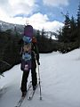 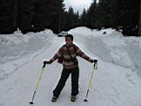 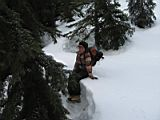 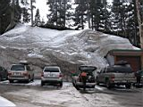 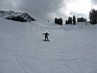 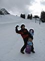 Каноэ, скалолазанье, всего за 5 баксов в час то и другое, ролики, велосипед каждый день, концерты, шоу, фестивали, музеи - короче жизнь кипит. А на работе, можно сказать, закипает... Мы продолжаем борьбу с привезенными растениями-агрессорами (айви и ежевикой), плюс строим тропы (американ стандарт для поп загородного маршрута 1.5 м. в ширине, вырублена экскаватором по принципу - тропа будет тут) и читаем лекции детям о том, как хорошо жить в правовом обществе и конечно заботиться об окружающей среде. 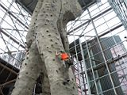 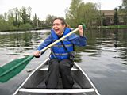 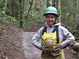 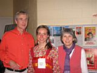 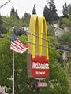 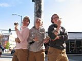 А еще теперь я пополнила ряды вегитерианцев, после роковой ошибки, а точнее просмотра документального фильма об издевательства над животными в этой стране. И дело не в том, что их пичкают всякой дрянью для поддержания хорошего состояния, а в том, что с ними обращются предельно жестоко. Теперь глядя на лакомый кусочек жареной сочной отбивной, меня тошнит, и хочется плакать... Тоже самое и о сыре, молоке и яйцах, а может и хуже... Так что, вот... GO VEGEN!!! Но ничего, здесь и без животных продуктов можно неплохо и вкусно подкрепиться, тем более что 20% населения Сиэттл - вегитерианцы, и они не сколько не страдают, а даже наоборот. Ну все, до связи... PS *** Скотчем меня замотала моя любимая бригада, потому что я видимо их достала... Не знаю, я просто постоянно делаю всякие приколы и подколы, шутки, ну короче веду себя как обычно. Вот они и решили отыграться. Но мороженое мне потом выдали, самое лучщее соевое мороженое!!! ПОтом - это после того как они уехали и вернулись через 5 мин... Вот такие, блин, америкосовские шуточки!!!
23.05.2007 :: Приветик! Поздравляю со всеми майскими праздниками!!! Здесь их конечно никто не отмечает, поэтому я совсем забыла о сушествовании этих самых праздников, да и вообше я тут потерялась во времени и пространстве, работе и путешествиях + Но это уже другая история+ По прежнему все пучком :) Блин, даже скучать некогда. Оказывается я уже отмотала половину срока моего здесь прибывания, даже неверится!!! Кстати, извиняюсь, что пишу редко, просто вместо этого я покоряю вершины здешних вулканов и радостно трачу последние деньги на перезды и перелеты по городам Америкосии. Так вот, о некоторых вещах поподробнее+ Совсем недавно, собрав теплую одежду и сноубордические прибамбасы по друзьям и знакомым, я с этими самыми друзьями и знакомыми + незнакомыми отправилась на поиски приключений на свою з+, ой, не то - на гору Святой Елены. Это действующий вулкан, потерявший половину своей высоты при извержении в 1980 г. Сейчас он чуть больше 3000 м., супер снежный и привлекательный для лыжников и бордеров, но открытый для посещения только в этом году, после 5ти летнего перерыва из-за повышенной активности и попытке извержения. 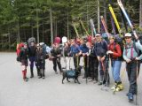 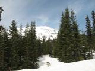 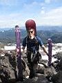 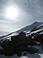 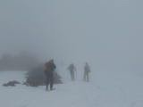 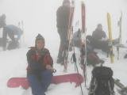 Это был первый вулкан в моей жизни! Он покарен и раскатан! Не мотря на жарищу и тяжелый рюкзак в первый день восхождения; чудесный снег с дождем и полную потерю видимости во второй. Да, было тяжко, получился облом с офигенным видом с вершины, да и катание было немного подмочено и подпорчено, но все равно - радости и снега полные штаны!!! Вулканы - это круто!!! Вулканы - это нет елок!!!
А еще, я только что вернулась из Чикаго!!! Вот это было круто!!! Три дня в городе американских мюзиклов!!! Солнечный, ветренный, без единого холмика, бешеный и фешенебельный - он меня просто покарил+ За недолгое время там пробывания я успела осмотреть практически все, от популярных мест, как парк Миллениум и музей искусств, пляжа озера Мичиган, до разнообразных прикольных заведений, о которых простым туристам и не снилось узнать. Трехдневный тур по вегитерианским ресторанам и самым прикольным магазинам, да, мой гид (точнее друг) знает как развлекаться по полной!!! 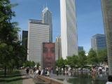 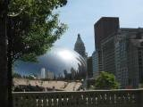 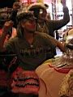 Короче, смотрите фото :) А еше тут лето, жара и работать ваще не прет :)
09.06.2007 :: Hi!!!!!!!!!! Ну вот :) Это я опять :) На этот раз я напишу немного о своих каникулах в Калифорнии. Ну ладно, а теперь о Сан-Франциско. Это город холмов, цветных домиков, викторианского стиля, солнца, ветра, хиппи, голубых и сумасшедших. Просто из покон веков туда стекались свободомыслящие и ищущие свободу пиплы. Идешь по улице, и на каждом шагу у тебя спрашивают мелочь, кричат что-нибудь непонятное даже англоговорящим или спят, в спальниках, так мило :) Короче если вы в Сан-Франц, а остановиться негде - улица это хороший вариант, законом разрешено ночевать где угодно, кроме городских парков. 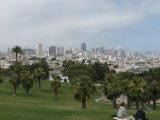 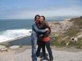 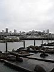 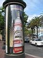 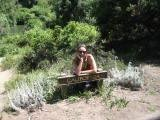 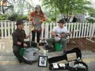 Но мне к таким крайностям прибегать не прешлось, меня
приютили друзья (Таня, наша землячка, и ее муж - Алан) в центре города,
и обеспечили насыщенную программу. Посещение достопримечательностей:
самого большого городского парка Golden Gate (Золотые ворота), моста
того же названия; пирса, где тусуются сотни морских котиков; интересных
улиц и районов, типа руссих, китайских, голубых; таблички на пляже,
где на том же русском, китайском, но правда не голубом, а испанском
, но не английском, написано, что купаться опасно. Также мне обеспечили
посешение ресторанов (где с тебя требуют чаевые в размере 15 % от заказа),
баров (где мне приходилось пить кокао) и ночных клубов (где лучше танцевать
на тумбочках воизбежании приставаний, причем от обоих полов). Короче
мне показали настоящий Сан-Франциско. И я до сих пор в шоке, в восторге,
короче еще не определилась :) Назад возвращалась самым распространенным америкосовским методом - на машине. Ничего хорошего сказать не могу: 12 часов, жара 35-40, спала всю дорогу :) Ну что еше рассказать? А вот. На огромом музыкальном фестевале в Сиеттле, я впервые увидела как играют на стиральных досках, пилах и ведрах. А в музыкальном музее я впервые обратила внимание на то, что Джимми Хендрикс и Курт Кабейн - оба левши (кстати они родом из Сиеттла)! Короче, как много нам открытий чудных приносит просвещенья дух (помню же еще). Не скучаю, всех люблю :) P.S.: Извиняюся за мой уже совсем корявый русский. Вы еще не слышали как я теперь говорю :) P.S.: А на счет вопроса о студенческих скидках, то
никаких скидок нет... Просто я трачу деньги которые мне платят - это
на самом деле по здешнему мелочи ( $200), но на билеты хватает. Я коромлю
на еде, одежде и сувенирах. Так что извиняюся - подарков не будет...
23.06.07 Привет!!!!!! Блин, до компа совсем не добраться, теперь половину вретени я живу в лесу :) Работаем по строительству троп в здешних нац парках. Блин как мне захотелось домой !!! Здесь даже пукнуть нельзя без разрещения, а то вдруг нарушишь уникалтьный балланс лесного сообшества!!! Я так соскучилась по настояшему костру, песням под гитару, по чаю и пряникам, наконец! А тут все небезопасно, незаконно и, короче, ваше, блин:) Но красиво не поспоришь!!! Природа и другая и схожая с нашей в тоже время, но все равно грустно :( На следующей неделе еду работать с подростками, тропостроительстао намечаетсян, 10 детишек на 3-их нас , чувствую опухну :) Но ничего прорвемся, посмотрим кто кого!!! Ну а в обшем все пучком была на Рейнире - не наверху конечно, но все равно круто! Была же!!!
Читать дальше - часть 3 Марина Леушина. 2007. * при наведении курсором мыши на фото, появляется название фото (комментарии к фото) |